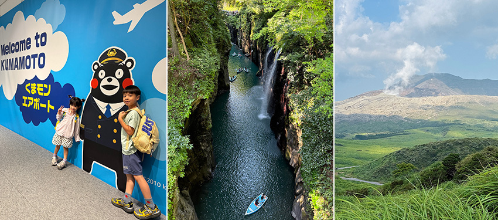

|  |
2025年5月，踏上了朝思暮想的國王湖（Königssee）之旅。那天一早，從奧地利的薩爾斯堡出發，搭乘840直達公車，滿心期待地來到這片被阿爾卑斯群山環繞的碧綠湖泊。與多數遊客的路線不同，我決定先前往上湖（Obersee），再搭船返回聖巴多羅買（St. Bartholomä）教堂，這樣的行程安排，讓我感受到國王湖的另一番風情。
 |
初抵國王湖碼頭時，湖面宛如一面巨大的翡翠鏡子，倒映著四周的雪山與松林。搭乘安靜的電動船航行其間，船夫在回音壁（Echo Wall）前吹響小喇叭，清脆的回聲在山谷間來回縈繞，遊客紛紛拿出手機捕捉這奇妙的體驗。
大約50分鐘後抵達Salet站，準備展開通往上湖的徒步之旅。Salet僅在每年的春夏季才有開放，若是冬季來訪，船隻僅開放到聖巴多羅買（St. Bartholomä）教堂。
與想像中平坦的步道不同，前往上湖的路途中有大一段階梯，石塊高低不一且狹窄，而且還是雙向道，有時還要讓對向路人通行，走起來格外考驗腳力與耐心。每一步都小心翼翼，深怕一個不注意就會滑倒，真的是不容易啊~不過，當我終於走到上湖湖畔時，一切辛苦都值得了。
 |
在健行的路上，讓我對外國遊客心生佩服。有人背著還不會走路的嬰兒，健步如飛地在山徑間穿梭；有人帶著小狗，一邊健行一邊享受大自然的洗禮。他們對於戶外活動的熱愛與從容，真的讓人覺得敬佩。
大約健行一個多小時，終於來到上湖宛如藏在深山裡的祕密花園，湖面如鏡，將壯麗的群山、藍天白雲與瀑布盡收眼底。遠方的羅特巴赫瀑布（Röthbachfall）從山壁間傾瀉而下，白練般的水花在陽光下閃爍著光芒。那一刻，我深深體會到「人間仙境」這四個字的真正含義。岸邊一間小木屋是「牛奶小屋」（Fischunkelalm）散發著濃濃的巴伐利亞風情，而此時湖邊的人潮相對較少，整個空氣中瀰漫著一種靜謐而純淨的氛圍。原本計畫要試試傳說中牛奶小屋的現擠牛奶，結果走到門口才發現那天居然沒賣，頓時有些失望。不過，抬頭望著藍天與山巒，我很快又調整好心情，繼續享受這片寧靜的大自然。
更讓我意外的是，有些外國人直接在湖邊換上泳衣就跳進湖水裡暢游，看起來非常Chill。看著他們在湖水中划動的身影，我也忍不住想親身體驗一下。於是我脫下鞋子，踩進上湖的水裡，瞬間被冰得倒抽一口氣！湖水清澈卻極其冰涼，即使只是踩水，也立刻感受到沁入骨髓的寒意，但同時也感覺到前所未有的清爽，好像整個人都被洗滌了一樣。
午餐時間，我選擇在上湖邊的餐廳享用鱒魚料理。新鮮的鱒魚烤得外酥內嫩，有著獨特的煙燻味道，入口鮮甜，讓人食指大動。能在這樣的美景裡用餐，簡直是雙重享受。
午餐稍作休息後，我再搭船前往聖巴多羅買（St. Bartholomä）教堂。紅色洋蔥圓頂的教堂與雄偉的瓦茨曼山（Watzmann）山群相映成趣，拍照時彷彿置身童話世界。這裡的步道平坦易行，許多遊客在湖邊野餐或漫步，一派悠閒。
最後，我搭船回到國王湖碼頭，結束了這趟充實又驚喜連連的旅程。回顧整段行程，從陡峭的階梯到冰涼的湖水，美味的鱒魚料理再到教堂的古樸，每一個細節都讓我回味無窮。這裡不僅僅是打卡聖地，更是一個能放慢腳步、細細品味的世外桃源。
給未來想到國王湖的旅人一些小提醒：記得提早搭船，特別是在旺季時，船票很容易一票難求；如果打算挑戰上湖的階梯，建議穿著防滑的健行鞋；記得備點水和零食，因為山裡的商店不一定都有營業；更別忘了帶上好心情與敬畏大自然的心，因為這裡的美，只有用心去體會，才能真正感受到它的深度與純粹。
國王湖的美，特別是上湖的那份寧靜，已深深烙印在我的心裡。當我閉上眼睛，還能想起湖面倒映的雪山與那沁涼的湖水，覺得自己好像又回到了那片純淨的天堂。那是一次難忘的旅行，也是一段心靈的洗禮。期待有一天，我還能再回到這片山水之間，繼續探索這份大自然的饋贈。